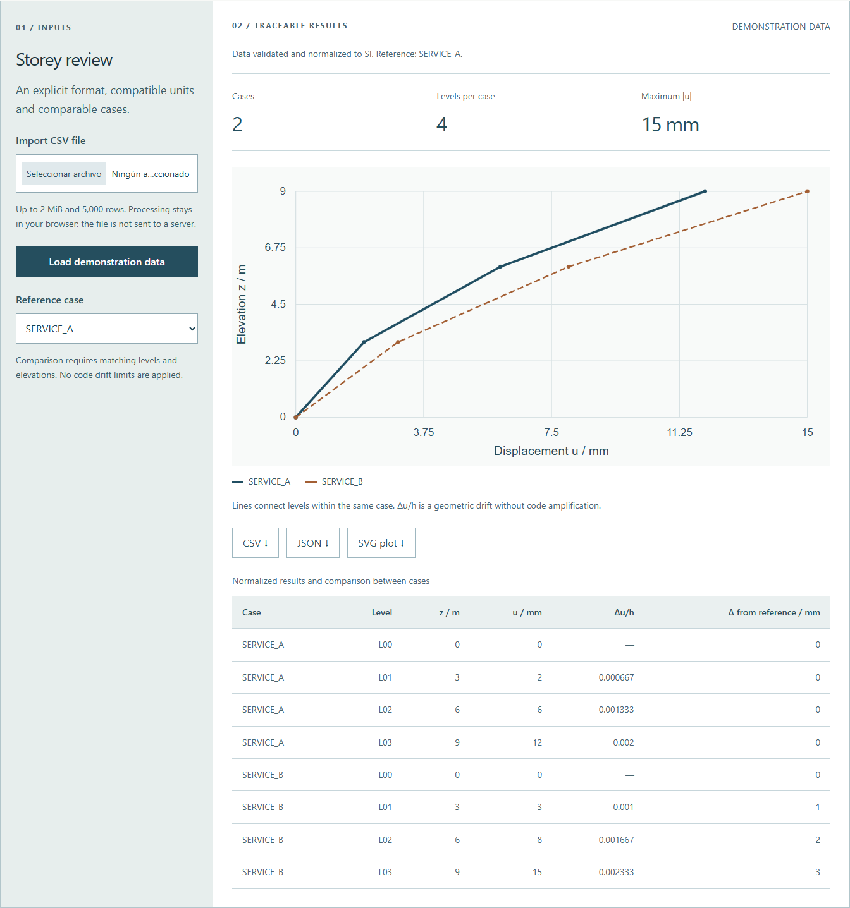

From a CSV to a storey-by-storey review
Displacements, case differences and unit checks.
Load exported results in the documented format, review storey profiles and download normalized data. The initial dataset is synthetic and does not come from an actual project.
Storey review
An explicit format, compatible units and comparable cases.
Up to 2 MiB and 5,000 rows. Processing stays in your browser; the file is not sent to a server.
Comparison requires matching levels and elevations. No code drift limits are applied.
What is calculated.
How it is checked.
The interface runs a lightweight JavaScript implementation. The downloadable Python modules process the same examples; parity tests compare both outputs. There is no active connection to ETABS or SAP2000.
To run a module, keep _common.py in the same directory and download the example CSV. The repository includes both modules, examples and tests. _common.py ↓
Exchange format
case,level,elevation,displacement,elevation_unit,displacement_unitAccepted length units: m, cm and mm. Every case–level pair must be unique. All cases must share levels and elevations. The first level retains absolute displacement; its interstorey drift is left undefined because no lower support is assumed.
hᵢ = zᵢ − zᵢ₋₁
driftᵢ = Δuᵢ / hᵢ
Exported geometric drift includes no code amplification or compliance check. Review the exported displacement type, its datum and the meaning of each case before using actual results.
Run Python and inspect tests
cd python
python process_results.py examples/storey-results.csv --json results.json --csv results.csv
python -m unittest discover -s tests -vDocumentation, validation and limitations ↗
2026 educational example, developed independently of employer projects and not validated for code-compliant design.
View interface capture with the initial example
